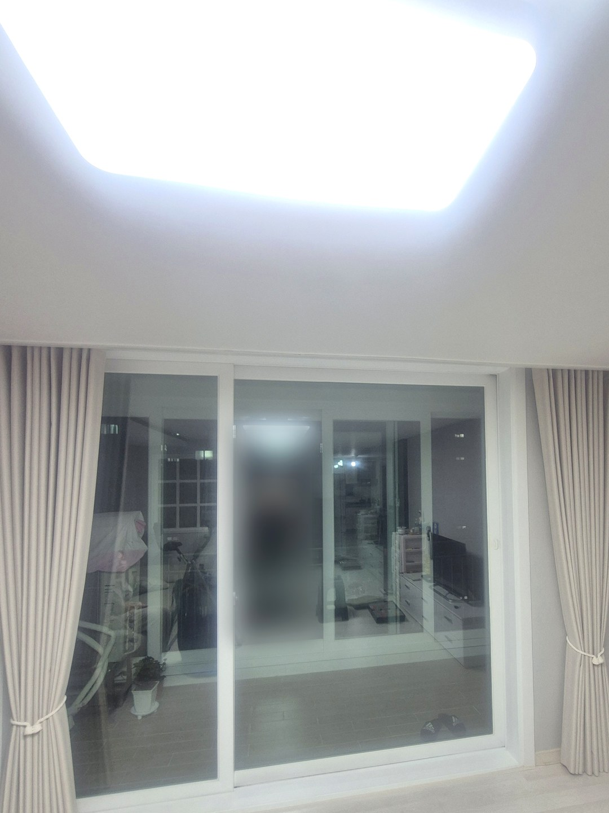
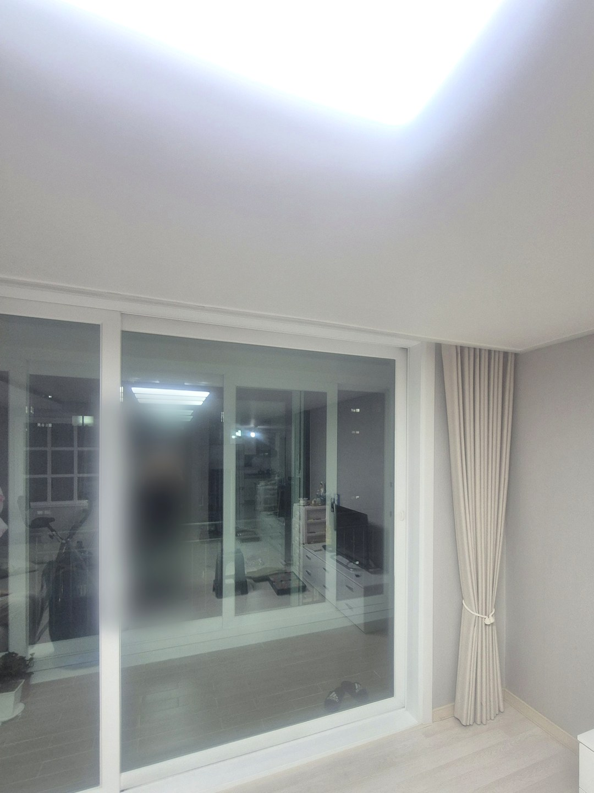
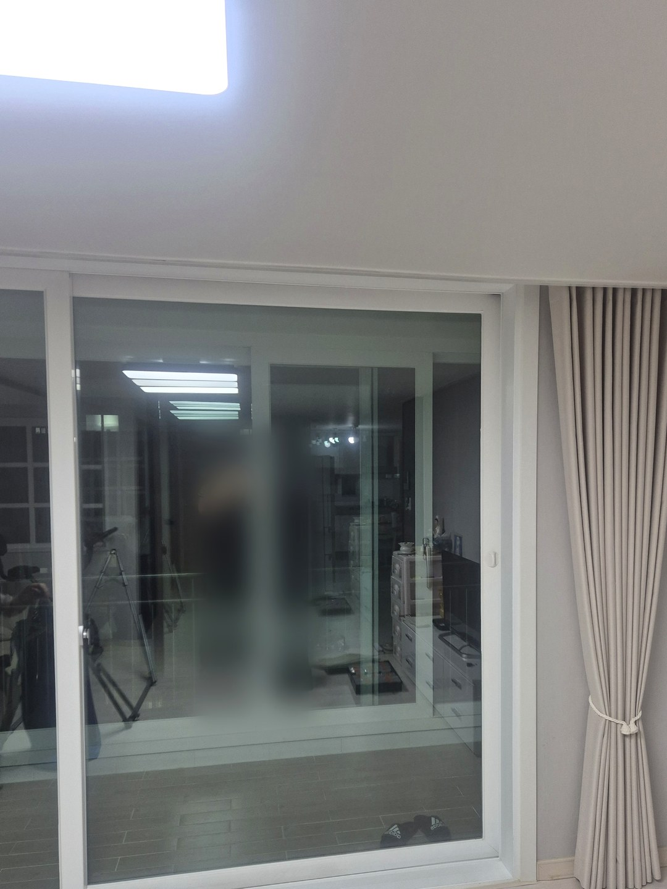
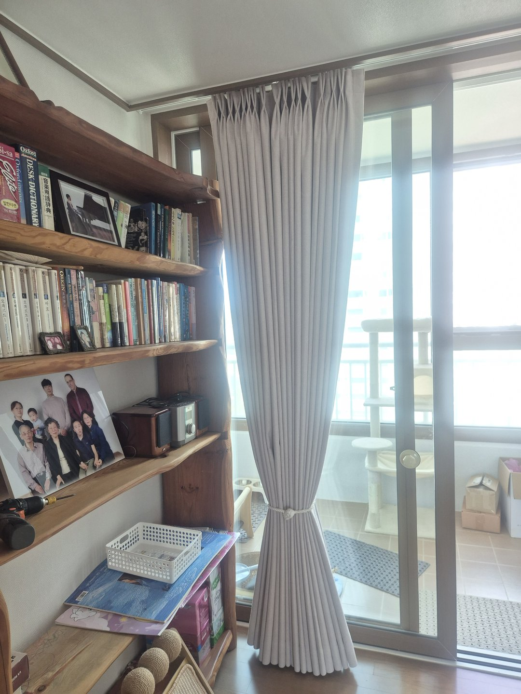

2026년 10월 14일 시공
포항 두호동 청우대림
거실 통창 베이지 커튼 시공후기

시공 장소는 경북 포항시 북구 두호동의 청우대림입니다.
예전에 저희에게 커튼을 맡기셨던 고객님께서 이 댁에 추천해 주셔서 연락을 받았습니다.
거실 한 곳 작업이었고, 원단 색은 요즘 문의가 가장 많은 베이지로 정하셨습니다.
세 짝 미닫이 통창, 벽 한 면을 덮는 폭
거실 베란다 쪽은 미닫이 세 짝이 이어진 큰 창입니다.
커튼 폭을 창틀 치수에 맞추지 않고 벽 한 면을 거의 다 덮도록 넓게 잡았습니다.
이렇게 하면 닫았을 때 창 양옆 틈이 줄고, 열었을 때는 원단이 창 옆 벽 쪽에 모여 유리를 덜 가립니다.

밤이 되면 통창은 거울이 됩니다
사진은 시공을 마친 저녁에 찍었습니다. 유리에 거실 안쪽이 비쳐 보이는 것도 그래서입니다.
실내 조명을 켜면 바깥보다 안이 밝아져, 반대로 밖에서는 거실 안이 잘 보이게 됩니다.
저녁 시간에는 커튼을 닫아 두시는 편을 권해 드렸습니다.


설치 후 알아 두실 점
사진은 천장 조명 아래에서 찍어 실제 원단보다 차갑고 회색빛으로 보일 수 있습니다. 베이지는 조명 색과 시간대에 따라 달라 보이는 색이라, 고르실 때는 샘플을 창가에 대고 낮과 저녁에 각각 확인하시길 권합니다.
상담 전에 준비해 주시면 좋은 것
거실 창을 조금 떨어져서 전체가 나오게 한 장 찍어 주세요.
커튼이 달릴 천장 쪽이 보이는 사진이 한 장 더 있으면 방문 전에 대략적인 견적을 안내해 드리기 쉽습니다.
비슷한 시공





포항자이디오션(2026년 10월 입주) 커튼 준비 일정 보기 →